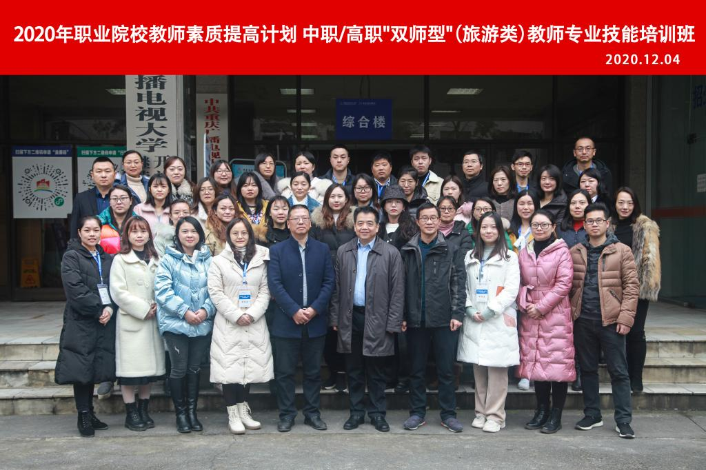

【供稿/管理学院、继续教育学院】12月4日，由我校管理学院和继续教育学院联合承办的重庆市高职、中职“双师型”（旅游类）教师专业技能培训项目正式开班，重庆市教委原巡视员李源田，管理学院院长黄翔、继续教育学院院长范文亚及来自30余所兄弟院校的40余名教师参加。
本次培训面向高职、中职旅游服务类相关专业负责人及授课教师开展，通过组建学习共同体，充分运用“专家讲座、任务驱动、学习反思、体验式培训”等方式，提升中高职院校职业教师双师素质和专业教学能力，促进旅游类专业职业教育发展。
